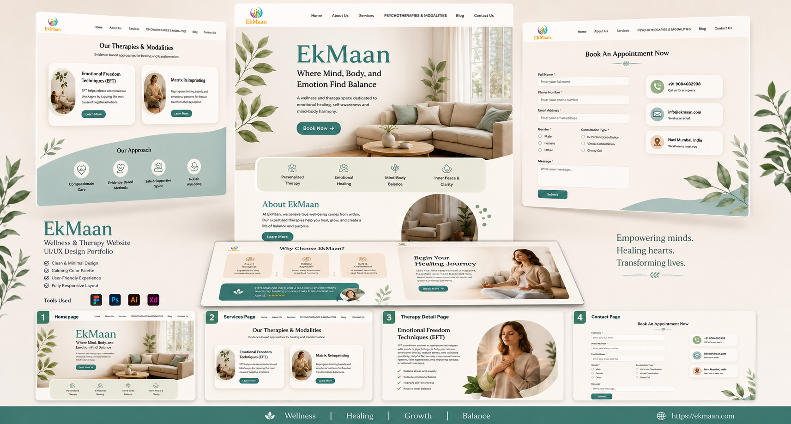

EkMaan is a modern physiotherapy and rehabilitation center dedicated to helping patients regain mobility, reduce pain, and improve their overall quality of life through personalized treatment plans. Infotive Solutions designed and developed a professional, patient-focused website that builds trust, enhances accessibility, and makes it easy for visitors to explore services, book appointments, and connect with experienced physiotherapists.
Project:
Expert Physiotherapy Care
Timeline:
Ongoing
Scope:
Custom Website Design & Development, Responsive UI/UX Design, Appointment Booking System, Healthcare Service Pages, Custom CMS Implementation, Performance & SEO Optimization, Cross-Browser Compatibility, Mobile-First Development, Contact Forms & Patient Inquiry System, Ongoing Maintenance & Support.

EkMaan required a modern, patient-focused digital platform that could effectively communicate its physiotherapy services while building trust with new patients. The challenge was to create a professional healthcare website that balanced clean design, accessibility, and performance, making it easy for visitors to explore treatments, learn about specialists, and book appointments seamlessly.
By combining strategic UI/UX design, scalable development, and performance-focused optimization, Infotive Solutions delivered a healthcare platform that strengthens EkMaan's digital presence, enhances patient engagement, and supports long-term business growth.
At Infotive Solutions, we partnered with EkMaan to create a modern, patient-centric digital platform that reflects the clinic's commitment to quality physiotherapy and rehabilitation services. Our approach focused on delivering a clean user experience, responsive design, and scalable development to help patients easily access information, book appointments, and connect with trusted healthcare professionals.
By combining strategic UI/UX design, scalable development, and performance-focused optimization, Infotive Solutions delivered a secure, user-friendly, and future-ready healthcare platform that helps EkMaan strengthen its digital presence, improve patient engagement, and support long-term business growth.
The EkMaan project demonstrates Infotive Solutions' expertise in developing modern healthcare websites that combine intuitive design, scalable technology, and exceptional user experiences. By focusing on accessibility, performance, and patient engagement, we delivered a future-ready digital platform that helps healthcare providers strengthen their online presence, attract more patients, and support sustainable growth.